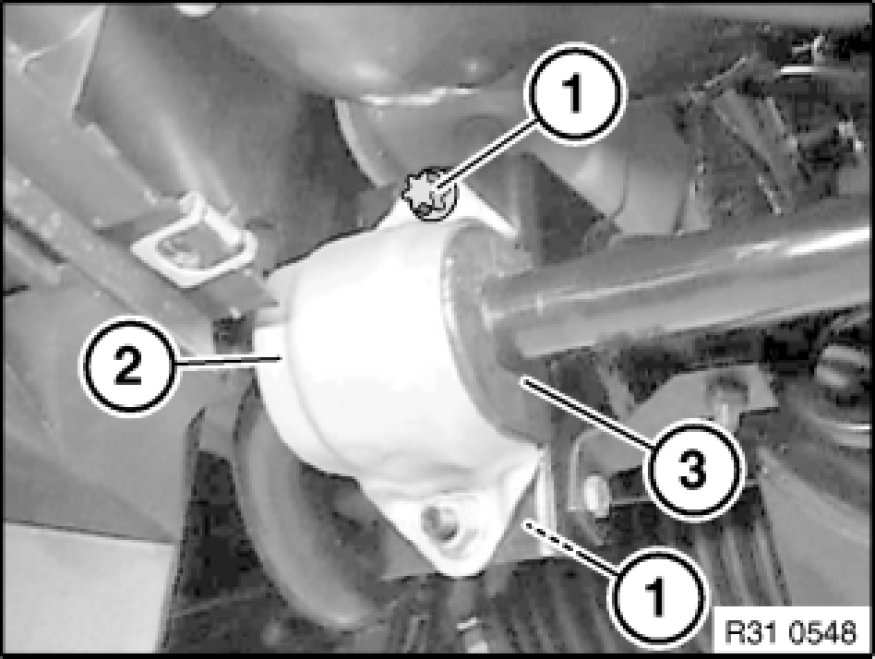

Replacing Rubber Mounts of Stabilizer Retaining Fixture on Front Axle Carrier
31 35 021 - Replacing rubber mounts of stabilizer retaining fixture on front axle carrier

Necessary preliminary tasks:
- Remove front underbody protection
- If necessary, remove steering gear cover on left and right

Release screws (1) and remove stabilizer from front axle carrier.
Remove both retaining brackets (2) and rubber mount (3).
Installation:
Keep retaining bracket (2), rubber mount (3) and stabilizer clean and free from oil and grease.
Tightening torque 31 35 1AZ Front Axle - Stabilizer Bar.